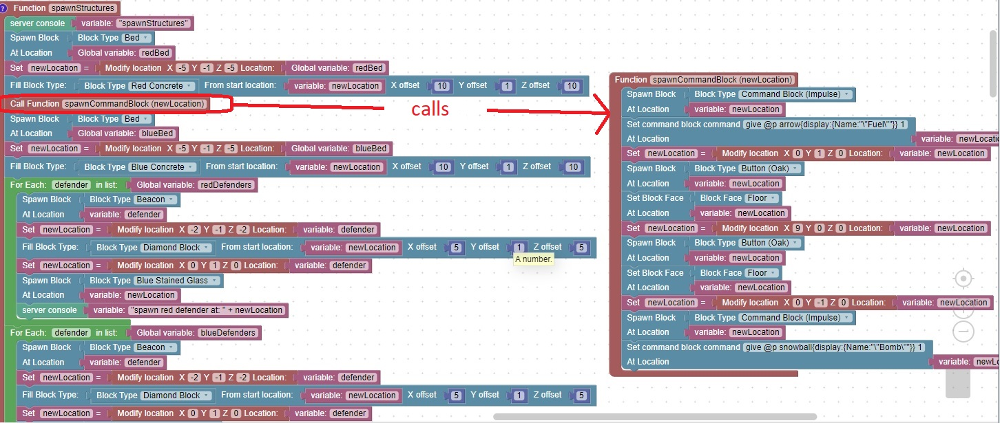

Function to spawn 2 command blocks with an oak button on top of each
This code will spawn a command blocks for Fuel and Bombs and place a command button on each

The homework is to call the function again for the blue team so that they also have command blocks available
Then test the code and confirm that it is behaving properly